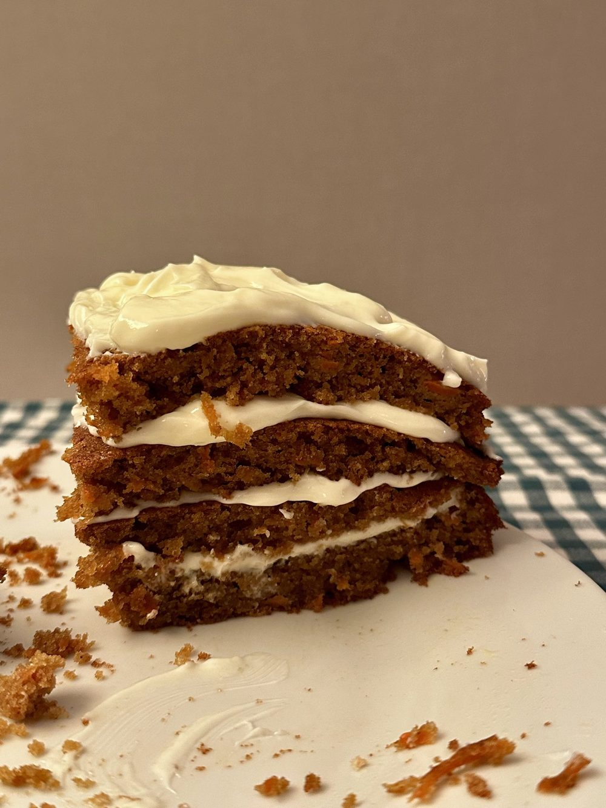
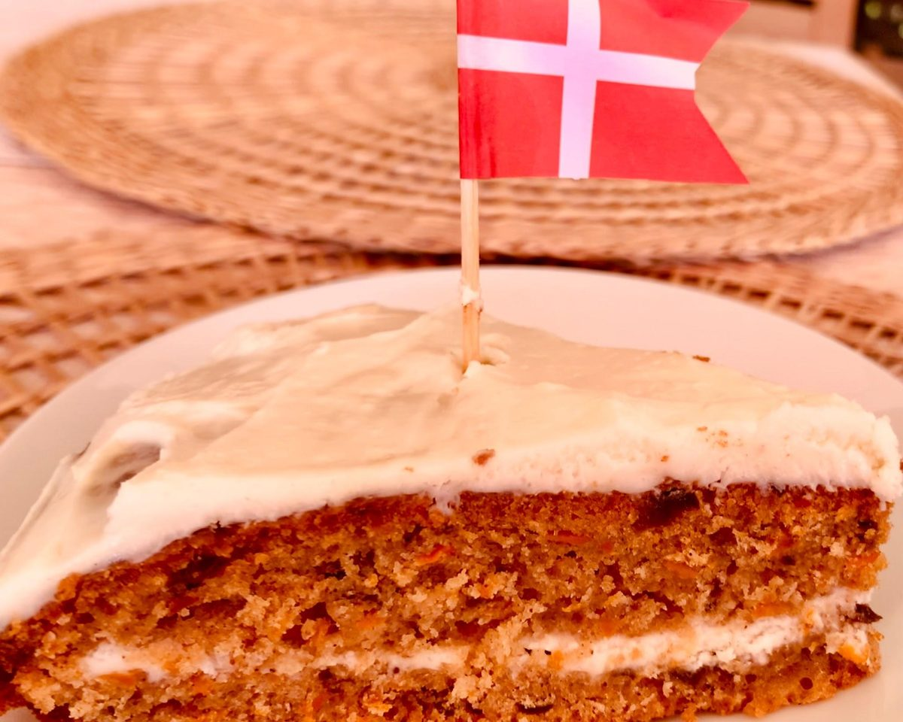

Comida tradicional
alicantina
‹ Todas las recetas
Tarta de zanahoria


Ingredientes
100 g de azúcar
200 g de harina
100 ml de aceite de girasol
3 huevos
3 zanahorias
Jengibre fresco
Ingredientes pequeños: 1 cucharadita de bicarbonato sódico, 1 cucharadita de canela, ½ cucharadita de sal, nuez moscada, piel de naranja y nueces
Para la crema: 250 g de queso de untar
60 g de mantequilla
150 g de azúcar glas
Preparación
En un bol.
Mezclar las
zanahorias ralladas
y el
jengibre
con la
harina
, el
azúcar
y los
ingredientes pequeños
.
En la batidora.
Batir los
huevos
con el
aceite
y mezclarlo con lo seco.
Hornear el bizcocho.
A
180 °C
durante
40 minutos
, en un molde untado de
mantequilla
.
Crema de queso.
Batir la
mantequilla
con el
queso
y añadir el
azúcar glas
poco a poco.
Montar.
Con el bizcocho ya frío,
cortarlo en capas
y rellenarlas con la crema. Untar también la crema por encima.